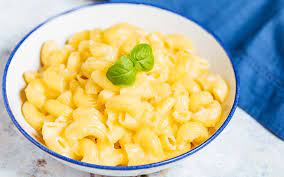

Microwaved Maraconi Cheese

Description
A nice microwave alternative to baked macaroni and cheese.
Vary the recipe by using farfalle, fusilli, or rotini pasta.
You may add cooked chicken or tuna to this recipe for a more hearty meal.
Ingredients
- 8 ounces macaroni
- 2 tablespoons butter
- 2 ½ tablespoons chopped onion
- 16 ounces cubed processed cheese food
- ¾ cup milk
- salt to taste
- ground black pepper to taste
Steps
In a large pot with boiling salted water cook the elbow macaroni until al dente. Drain
and set aside.In a 2-quart microwave-safe covered casserole dish, cook the onions and butter or
margarine on high for 3 to 4 minutes.Add the cooked and drained pasta, milk, and cubed cheese and stir. Cook for 11 to 12
minutes on high, stirring well after 4, 8, and 11 minutes. The mixture will still be runny
at this stage. Add salt and pepper to taste.Let stand for 5-8 minutes before serving. The sauce will thicken as it cools slightly.